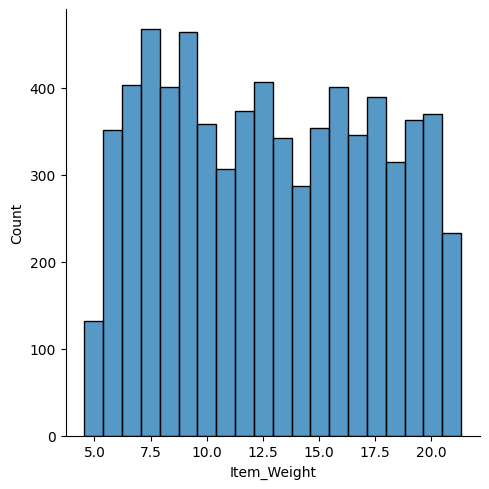
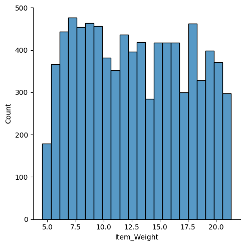
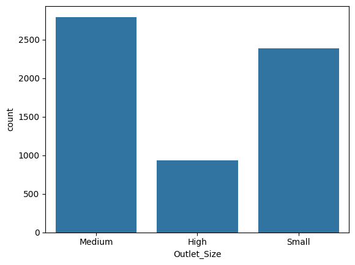
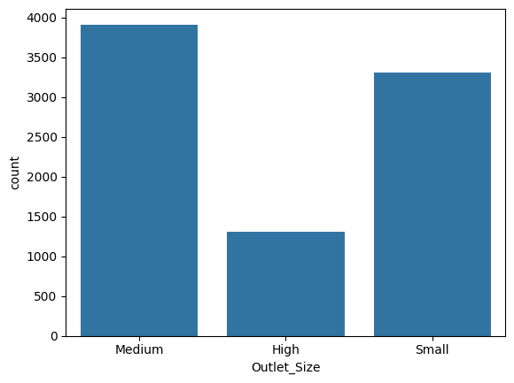
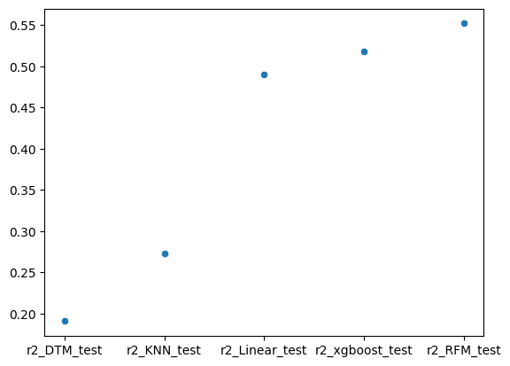

import pandas as pd
import numpy as np
import matplotlib.pyplot as plt
import seaborn as sns
from sklearn.preprocessing import LabelEncoder
from sklearn.model_selection import train_test_split
from xgboost import XGBRegressor
from sklearn import metrics
from sklearn.ensemble import RandomForestRegressor
from sklearn.tree import DecisionTreeRegressor
from sklearn.neighbors import KNeighborsRegressor
from sklearn.linear_model import LinearRegressiondf_train = pd.read_csv('Train.csv')
df_train.head()| Item_Identifier | Item_Weight | Item_Fat_Content | Item_Visibility | Item_Type | Item_MRP | Outlet_Identifier | Outlet_Establishment_Year | Outlet_Size | Outlet_Location_Type | Outlet_Type | Item_Outlet_Sales | |
|---|---|---|---|---|---|---|---|---|---|---|---|---|
| 0 | FDA15 | 9.30 | Low Fat | 0.016047 | Dairy | 249.8092 | OUT049 | 1999 | Medium | Tier 1 | Supermarket Type1 | 3735.1380 |
| 1 | DRC01 | 5.92 | Regular | 0.019278 | Soft Drinks | 48.2692 | OUT018 | 2009 | Medium | Tier 3 | Supermarket Type2 | 443.4228 |
| 2 | FDN15 | 17.50 | Low Fat | 0.016760 | Meat | 141.6180 | OUT049 | 1999 | Medium | Tier 1 | Supermarket Type1 | 2097.2700 |
| 3 | FDX07 | 19.20 | Regular | 0.000000 | Fruits and Vegetables | 182.0950 | OUT010 | 1998 | NaN | Tier 3 | Grocery Store | 732.3800 |
| 4 | NCD19 | 8.93 | Low Fat | 0.000000 | Household | 53.8614 | OUT013 | 1987 | High | Tier 3 | Supermarket Type1 | 994.7052 |
df_train.shape(8523, 12)df_train.isnull().sum()| 0 | |
|---|---|
| Item_Identifier | 0 |
| Item_Weight | 1463 |
| Item_Fat_Content | 0 |
| Item_Visibility | 0 |
| Item_Type | 0 |
| Item_MRP | 0 |
| Outlet_Identifier | 0 |
| Outlet_Establishment_Year | 0 |
| Outlet_Size | 2410 |
| Outlet_Location_Type | 0 |
| Outlet_Type | 0 |
| Item_Outlet_Sales | 0 |
Replacing Null Values
sns.displot(df_train.Item_Weight)
Item_Weight_min = df_train.Item_Weight.min(skipna=True)
Item_Weight_min4.555Item_Weight_max = df_train.Item_Weight.max(skipna=True)
Item_Weight_max21.35Weight_na_rows = df_train.Item_Weight.isna()
random_values = np.random.uniform(Item_Weight_min, Item_Weight_max, size=1463) #1463 is the number of null values in the column
df_train.loc[Weight_na_rows, 'Item_Weight'] = random_values
df_train.isnull().sum()| 0 | |
|---|---|
| Item_Identifier | 0 |
| Item_Weight | 0 |
| Item_Fat_Content | 0 |
| Item_Visibility | 0 |
| Item_Type | 0 |
| Item_MRP | 0 |
| Outlet_Identifier | 0 |
| Outlet_Establishment_Year | 0 |
| Outlet_Size | 2410 |
| Outlet_Location_Type | 0 |
| Outlet_Type | 0 |
| Item_Outlet_Sales | 0 |
sns.displot(df_train.Item_Weight)
For rows that had null values in the Item_Weight column, they now have weights that are now evenly distributed across the Item_weight distribution
Now I will do the same with the Outlet_Size column
df_train.Outlet_Size.value_counts()| count | |
|---|---|
| Outlet_Size | |
| Medium | 2793 |
| Small | 2388 |
| High | 932 |
df_train.Outlet_Location_Type.value_counts()
# I was hoping that the outlet location type would help me replace the null values of Outlet_Size ... no dice| count | |
|---|---|
| Outlet_Location_Type | |
| Tier 3 | 3350 |
| Tier 2 | 2785 |
| Tier 1 | 2388 |
sns.countplot(x=df_train.Outlet_Size)
value_dist = df_train.Outlet_Size.value_counts(normalize=True)Outlet_Size_na_rows = df_train.Outlet_Size.isna()
num_size_na_rows = Outlet_Size_na_rows.sum()
distributed_values = np.random.choice(value_dist.index, size=num_size_na_rows, p=value_dist.values)
df_train.loc[Outlet_Size_na_rows, 'Outlet_Size'] = distributed_valuessns.countplot(x=df_train.Outlet_Size)
df_train.isna().sum()| 0 | |
|---|---|
| Item_Identifier | 0 |
| Item_Weight | 0 |
| Item_Fat_Content | 0 |
| Item_Visibility | 0 |
| Item_Type | 0 |
| Item_MRP | 0 |
| Outlet_Identifier | 0 |
| Outlet_Establishment_Year | 0 |
| Outlet_Size | 0 |
| Outlet_Location_Type | 0 |
| Outlet_Type | 0 |
| Item_Outlet_Sales | 0 |
df_train.Item_Fat_Content.value_counts()
#Will need to replace some of these| count | |
|---|---|
| Item_Fat_Content | |
| Low Fat | 5089 |
| Regular | 2889 |
| LF | 316 |
| reg | 117 |
| low fat | 112 |
df_train.replace({'Item_Fat_Content': {'low fat':'Low Fat', 'LF':'Low Fat', 'reg':'Regular'}}, inplace=True)df_train.Item_Fat_Content.value_counts()| count | |
|---|---|
| Item_Fat_Content | |
| Low Fat | 5517 |
| Regular | 3006 |
Now some of the data cleaning is done, now it is time for the machine learning portion
encoder = LabelEncoder()df_train.Item_Identifier = encoder.fit_transform(df_train['Item_Identifier'])
df_train.Item_Fat_Content = encoder.fit_transform(df_train['Item_Fat_Content'])
df_train.Item_Type = encoder.fit_transform(df_train['Item_Type'])
df_train.Outlet_Identifier = encoder.fit_transform(df_train['Outlet_Identifier'])
df_train.Outlet_Size = encoder.fit_transform(df_train['Outlet_Size'])
df_train.Outlet_Location_Type = encoder.fit_transform(df_train['Outlet_Location_Type'])
df_train.Outlet_Type = encoder.fit_transform(df_train['Outlet_Type'])df_train.head(2)| Item_Identifier | Item_Weight | Item_Fat_Content | Item_Visibility | Item_Type | Item_MRP | Outlet_Identifier | Outlet_Establishment_Year | Outlet_Size | Outlet_Location_Type | Outlet_Type | Item_Outlet_Sales | |
|---|---|---|---|---|---|---|---|---|---|---|---|---|
| 0 | 156 | 9.30 | 0 | 0.016047 | 4 | 249.8092 | 9 | 1999 | 1 | 0 | 1 | 3735.1380 |
| 1 | 8 | 5.92 | 1 | 0.019278 | 14 | 48.2692 | 3 | 2009 | 1 | 2 | 2 | 443.4228 |
X = df_train.drop(columns='Item_Outlet_Sales', axis=1)
Y = df_train['Item_Outlet_Sales']X_train, X_test, Y_train, Y_test = train_test_split(X,Y,test_size=0.2, random_state=2)XGBoost Model Test
regressor = XGBRegressor()regressor.fit(X_train,Y_train)XGBRegressor(base_score=None, booster=None, callbacks=None,
colsample_bylevel=None, colsample_bynode=None,
colsample_bytree=None, device=None, early_stopping_rounds=None,
enable_categorical=False, eval_metric=None, feature_types=None,
feature_weights=None, gamma=None, grow_policy=None,
importance_type=None, interaction_constraints=None,
learning_rate=None, max_bin=None, max_cat_threshold=None,
max_cat_to_onehot=None, max_delta_step=None, max_depth=None,
max_leaves=None, min_child_weight=None, missing=nan,
monotone_constraints=None, multi_strategy=None, n_estimators=None,
n_jobs=None, num_parallel_tree=None, ...)In a Jupyter environment, please rerun this cell to show the HTML representation or trust the notebook. On GitHub, the HTML representation is unable to render, please try loading this page with nbviewer.org.
XGBRegressor(base_score=None, booster=None, callbacks=None,
colsample_bylevel=None, colsample_bynode=None,
colsample_bytree=None, device=None, early_stopping_rounds=None,
enable_categorical=False, eval_metric=None, feature_types=None,
feature_weights=None, gamma=None, grow_policy=None,
importance_type=None, interaction_constraints=None,
learning_rate=None, max_bin=None, max_cat_threshold=None,
max_cat_to_onehot=None, max_delta_step=None, max_depth=None,
max_leaves=None, min_child_weight=None, missing=nan,
monotone_constraints=None, multi_strategy=None, n_estimators=None,
n_jobs=None, num_parallel_tree=None, ...)# prediction on training data
training_data_prediction = regressor.predict(X_train)# R squared Value
r2_train = metrics.r2_score(Y_train, training_data_prediction)print('R Squared value =', r2_train)R Squared value = 0.8895030288660489test_data_prediction = regressor.predict(X_test)r2_xgboost_test = metrics.r2_score(Y_test, test_data_prediction)print('R Squared value =', r2_xgboost_test)R Squared value = 0.5181898088596653Linear Model Test
regressor = LinearRegression()
regressor.fit(X_train, Y_train)
test_data_prediction = regressor.predict(X_test)
r2_linear_test = metrics.r2_score(Y_test, test_data_prediction)
print('R Squared value =', r2_linear_test)R Squared value = 0.48984966026135657Random Forest Model Test
model3 = RandomForestRegressor(random_state = 2)
model3.fit(X_train,Y_train)
test_data_prediction = model3.predict(X_test)
r2_RFM_test = metrics.r2_score(Y_test, test_data_prediction)
print('R Squared value =', r2_RFM_test)R Squared value = 0.5518272697634796Decision Tree Model Test
model4 = DecisionTreeRegressor(random_state= 2)
model4.fit(X_train,Y_train)
test_data_prediction = model4.predict(X_test)
r2_DTM_test = metrics.r2_score(Y_test, test_data_prediction)
print('R Squared value =', r2_DTM_test)R Squared value = 0.19082971222434786K Nearest Neightbors Model Test
model5 = KNeighborsRegressor(n_neighbors=30) #30 yielded the greatest R Squared value after some quick testing
model5.fit(X_train,Y_train)
test_data_prediction = model5.predict(X_test)
r2_KNN_test = metrics.r2_score(Y_test, test_data_prediction)
print('R Squared value =', r2_KNN_test)R Squared value = 0.27252858265858204Lets Visualize the different R Squared Value
model = ["r2_DTM_test", "r2_KNN_test", "r2_Linear_test", "r2_xgboost_test", "r2_RFM_test"]
model_value = [r2_DTM_test, r2_KNN_test, r2_linear_test, r2_xgboost_test, r2_RFM_test]
sns.scatterplot(x = model, y = model_value)